Pokémon in the NYPL archives
2018-11-7 14:10:04
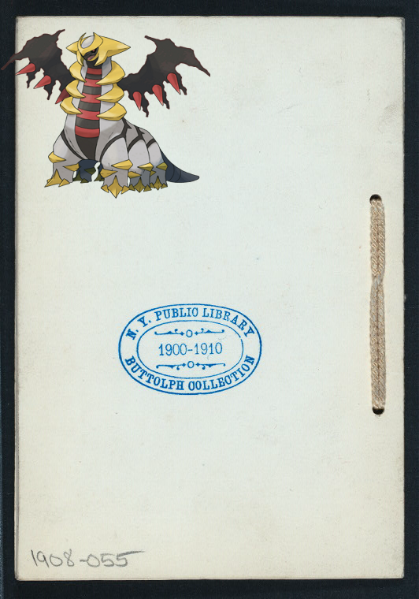
on
ANNUAL DINNER [held by] SATURDAY ONE O'CLOCK KNOCKERS CLUB [at] REPUBLICAN CLUB OF THE CITY OF NEW YORK (OTHER (CLUB);)
2018-11-7 12:10:04
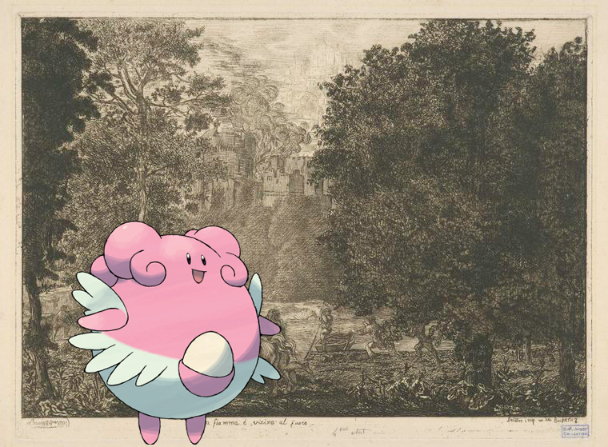
Blissey on
La fiamma è vicina al fuoco.
2018-11-7 10:10:04
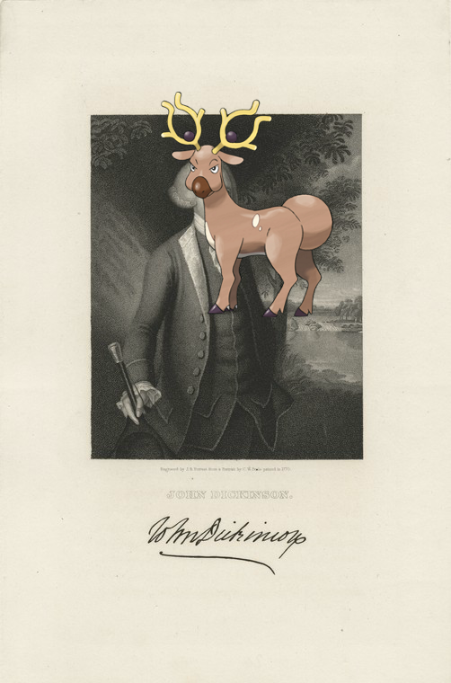
Stantler –
John Dickinson.
2018-11-7 08:10:05
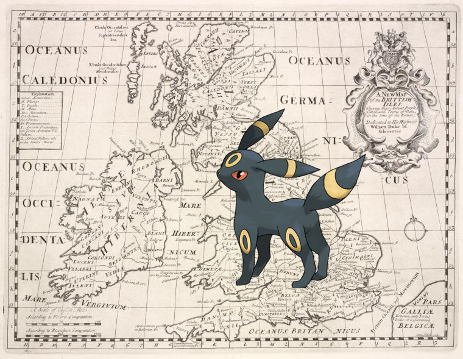
Umbreon +
A new map of the British Isles, shewing their ancient people, cities, and towns of note, in the time of the Romans.
!
2018-11-7 06:10:04
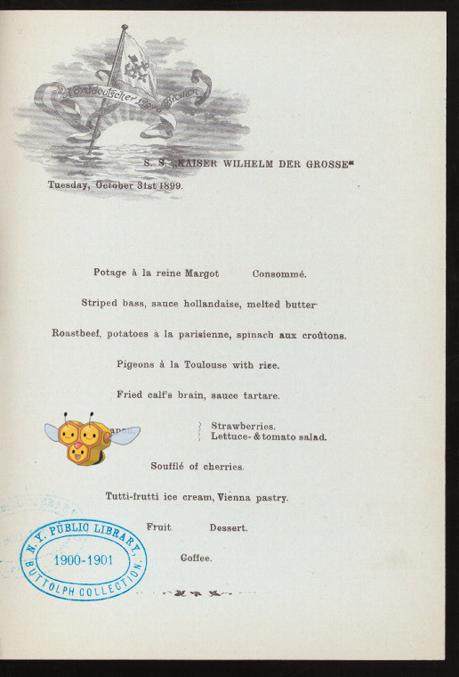
Combee @
DINNER MENU [held by] NORDDEUTSCHER LLOYD BREMEN [at] "S.S. ""KAISER WILHELM DER GROSSE""" (SS;)
.
2018-11-7 04:10:05
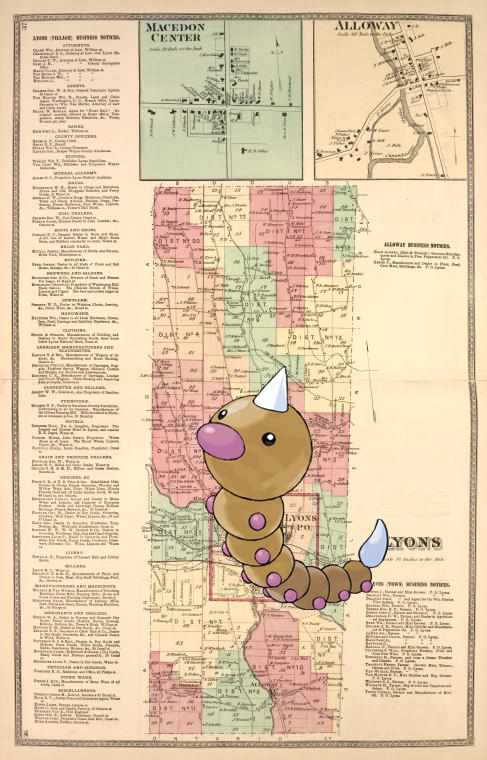
Weedle +
Lyons (Village) Business Notices. ; Macedon Center [Village]; Alloway [Village]; Alloway Business Notices. ; Lyons [Township]; Lyons (Town) Business Notices.
2018-11-7 02:10:04
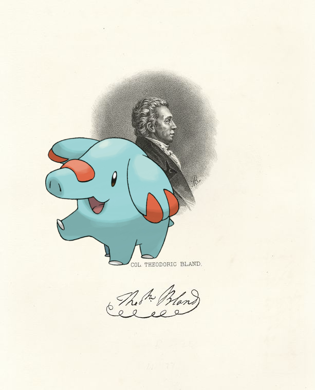
Phanpy |
Col. Theodoric Bland
.
2018-11-7 00:10:05
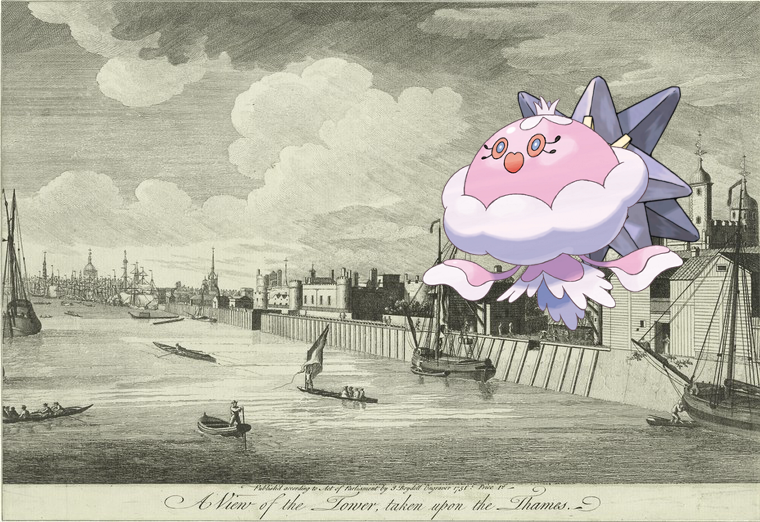
Starmie, –
A view of the Tower, taken upon the Thames.
!
2018-11-6 22:10:08
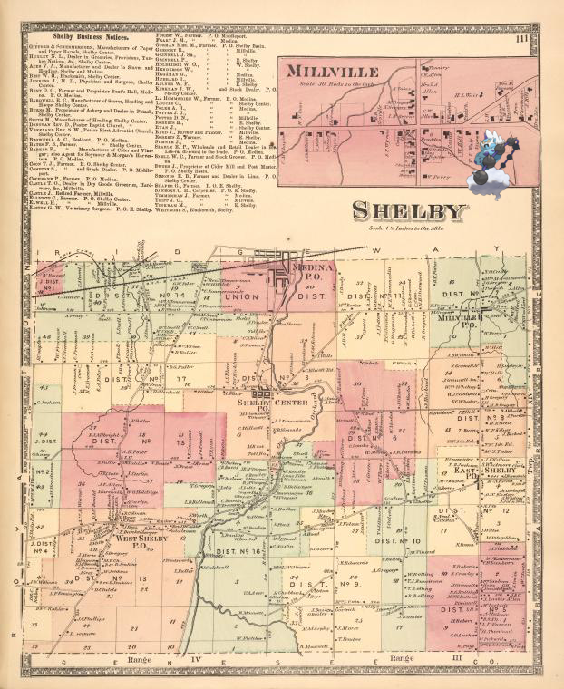
Thundurus-Incarnate |
Shelby Business Notices. ; Millville [Village]; Shelby [Township]
!
2018-11-6 20:10:05
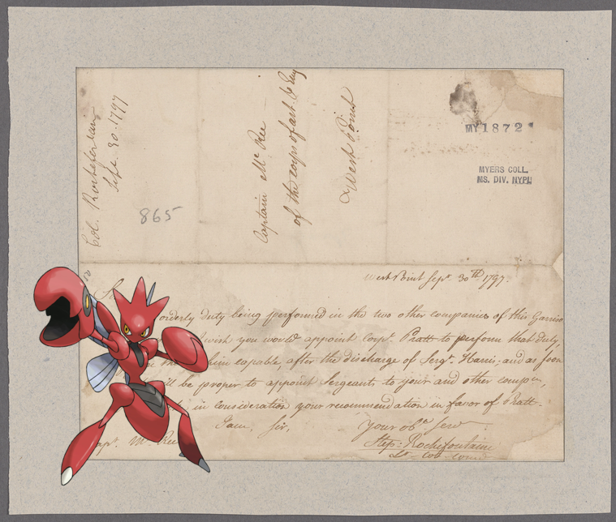
Scizor on
Rochefontaine, Stephen. West Point. To Captain McKee
!
2018-11-6 18:10:05
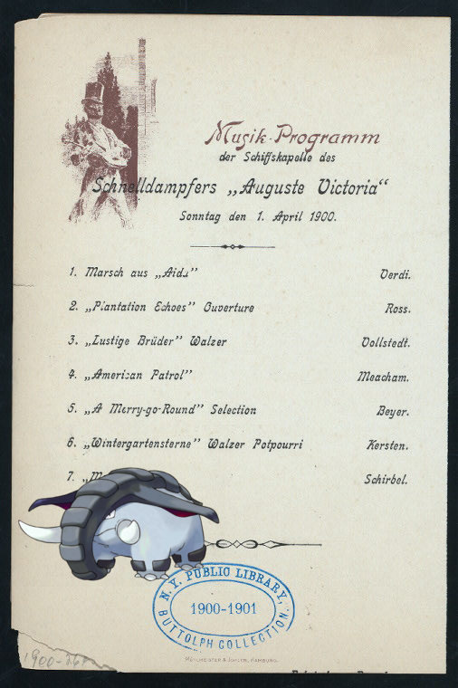
Donphan +
DINNER [held by] HAMBURG-AMERIKA LINIE [at] SS AUGUSTE VICTORIA (SS;)
2018-11-6 16:10:05
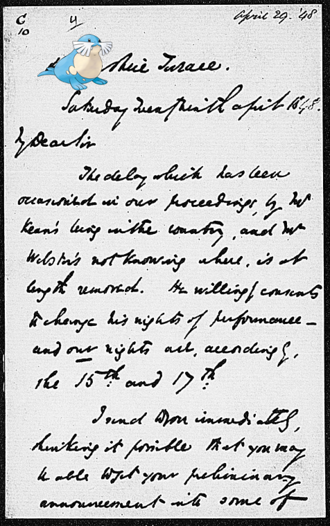
Sealeo +
Cunningham, Peter. ALS to 1848 Apr. 29
2018-11-6 14:10:08
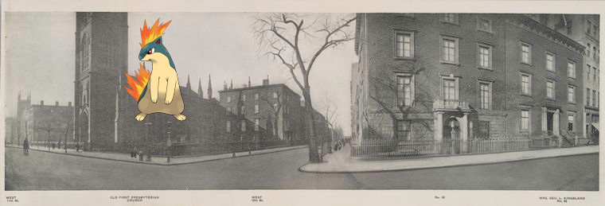
Quilava ;
West 11th St - No. 62 Mrs. Geo. L. Kingsland, West 12th St.
2018-11-6 12:10:04
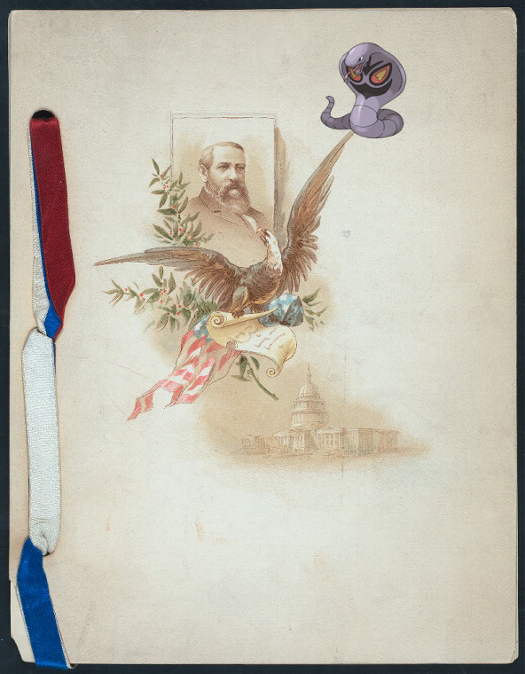
Arbok –
BANQUET FOR BENJAMIN HARRISON, PRESIDENT OF THE U.S. [held by] CITIZENS OF SAN FRANSICO [at] "PALACE HOTEL, SAN FRANSICO, CAL" (HOTEL)
.
2018-11-6 10:10:04
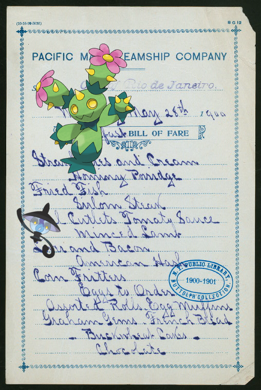
Maractus, Lampent @
BREAKFAST [held by] PACIFIC MAIL STEAMSHIP COMPANY [at] "STEAMSHIP ""CITY OF RIO DE JANEIRO""" (SS;)
2018-11-6 08:10:09
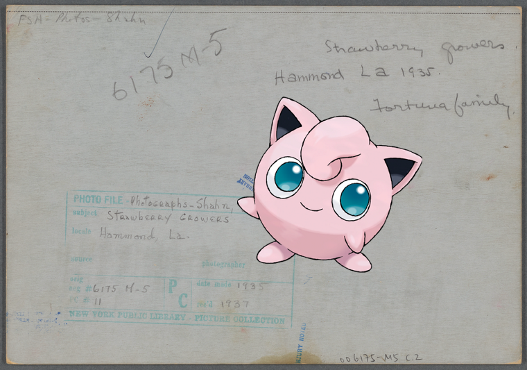
Jigglypuff on
Strawberry growers, Hammond, Louisiana
2018-11-6 06:10:04
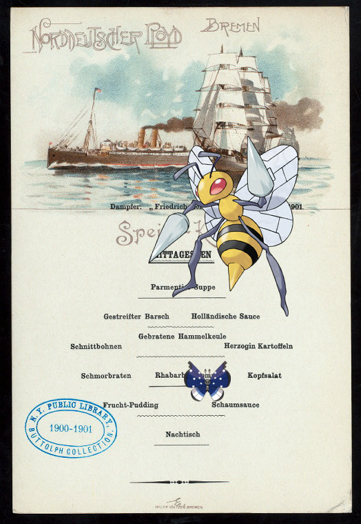
Beedrill, |
DINNER [held by] NORDDEUTSCHER LLOYD BREMEN [at] SS FRIEDRICH DER GROSSE (SS;)
66
|
65
|
64
|
63
|
62
|
61
|
60
|
59
|
58
|
57
|
56
|
55
|
54
|
53
|
52
|
51
|
50
|
49
|
48
|
47
|
46
|
45
|
44
|
43
|
42
|
41
|
40
|
39
|
38
|
37
|
36
|
35
|
34
|
33
|
32
|
31
|
30
|
29
|
28
|
27
|
26
|
25
|
24
|
23
|
22
|
21
|
20
|
19
|
18
|
17
|
16
|
15
|
14
|
13
|
12
|
11
|
10
|
9
|
8
|
7
|
6
|
5
|
4
|
3
|
2
|
1
|
0